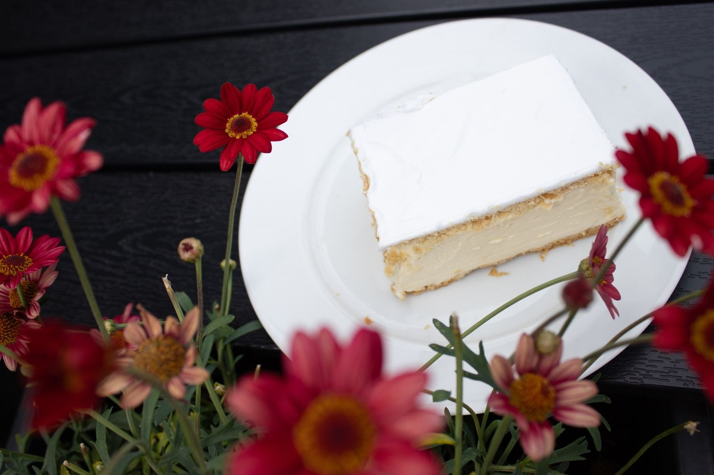
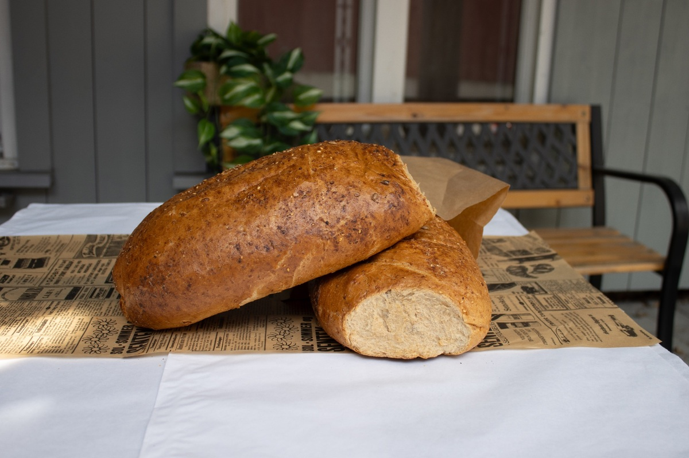

butikk
Lillehammers familiedrevne bakeri og konditori siden 1991.
Håndbakte brød, marsipankaker, genferspisser og påsmurte varer fra Granum Bakeri. To avdelinger på Lillehammer — kjent for kvalitet siden 1991.
Om GRANUM BAKERI
Skriv inn epostadressen din (må være den som er registrert på Mekke), og trykk på "Send meg passord" for å bli tilsendt nytt passord på epost.
Granum Bakeri er Lillehammers familiedrevne bakeri og konditori — et lokalt møtested siden 1991. Hos oss kjenner du igjen smaken av tradisjon, og du møter mennesker som er glade i håndverket sitt.
I disken finner du ferske brød og rundstykker , friske søte bakevarer og wienerbakst , samt vårt store utvalg av marsipan- og kremkaker . Vi er kjent for våre flotte og velsmakende selskapskaker, og vi selger genferspisser som er Lillehammers og Granums egen spesialitet — en kake du kun finner hos oss.

Dette gjør vi
Håndbakt tradisjon
Gjærbakst på "gamlemåten" hvor deigen får tid til å hvile før steking. 🎂
Kjent for marsipankaker
Flotte og velsmakende marsipankaker — en av våre signaturprodukter. ⭐
Kontakt oss
Spørsmål om bestilling? Ta kontakt — vi hjelper deg gjerne.
Familiedrevet bakeri på Lillehammer
Hos oss kan du glede deg over ferske bakevarer, kaker og et godt utvalg av påsmurte produkter. Vi baker gjærbaksten på "gamlemåten" hvor deigen får tid til å hvile før steking.
Slik jobber vi
- 01
Se hva vi har
Utvalget og det vi gjør står på siden. Er du i nærheten, stikk innom.
- 02
Spør oss
Ring, skriv eller kom innom — du får svar på det du lurer på.
- 03
Vi tar det derfra
Trenger du noe spesielt, finner vi ut av det sammen.
Mer om det vi gjør
Skal du ha selskap, jubileum eller arrangement? Vi tilbyr catering med snitter og påsmurte fat — tilpasset antall gjester og smakspreferanser.
Vi har to avdelinger på Lillehammer — en norda brua og en midt i gågata. Stikk innom for en kopp kaffe og noe godt, eller ta kontakt hvis du ønsker å bestille.
Fra arbeidet vårt


Ta kontakt
- Telefon61263810
- E-posthilde@granumbakeri.no
GRANUM BAKERI AS · 61263810
Be om tilbud